Neuron anatomy
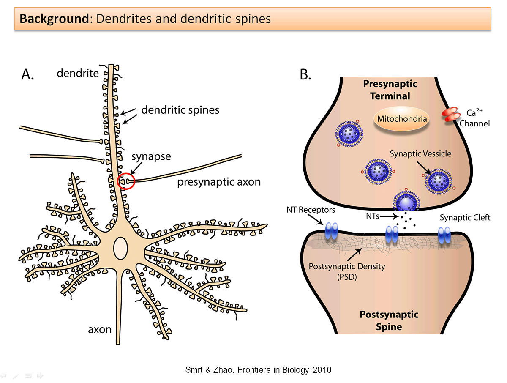
Artificial Neural Network:
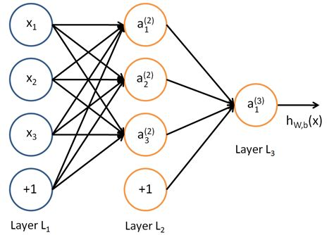
Gradient Descent
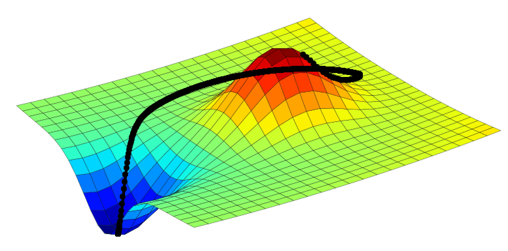
Chaotically Varying Synaptic Weights
- \(W(t) = A\sin{2\pi \frac{t-\sum_{0}^{i}T_{i}}{T_{i}}}+C\)
- Period of sine: \(T_{i} \in Normal(\mu,\sigma)\)
Chaotically Varying Synaptic Weights
- 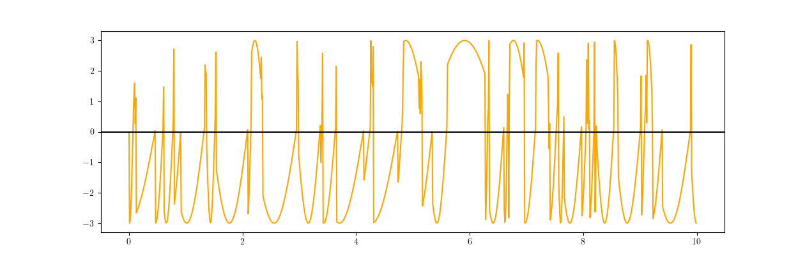
- \(W(t) = 1\sin{2\pi \frac{t-\sum_{0}^{i}T_{i}}{T_{i}}}+0\)
Updating Weight Amplitude and Center
- Change in Center: \(\dot{C}=\alpha(W(t)-C)R(t)\)
- Change in Amplitude: \(\dot{A}= -\beta R(t)\)
- Reward function: \(R(t)= sign(f(W(t))-f(C(t-1)))\)
Example:
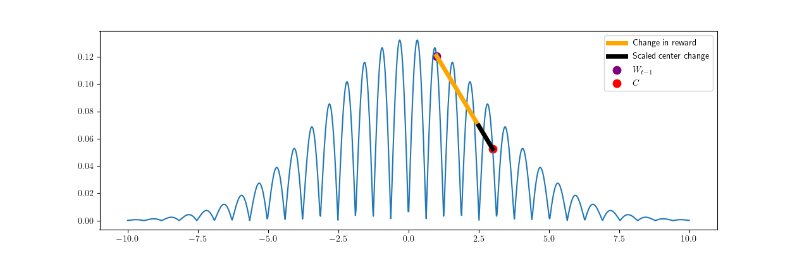
Example:
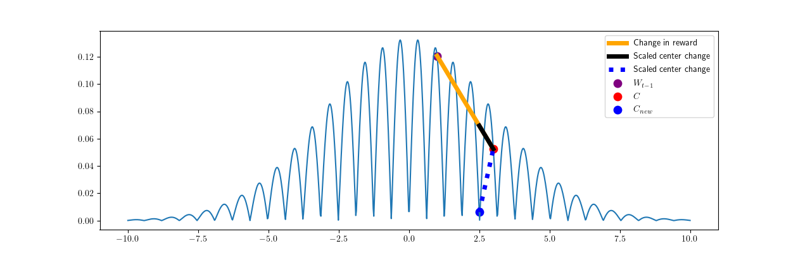
Updating Weight Amplitude and Center
- 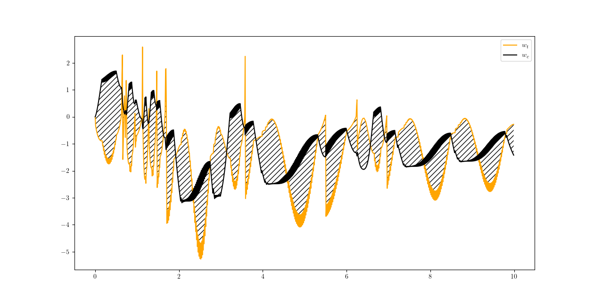
Change in Center: \(\dot{C}=\alpha(W(t)-C)R(t)\)
Change in Amplitude: \(\dot{A}= -\beta R(t)\)
Reward function: \(R(t)= sign(f(W(t))-f(W(t-1)))\)
1D benchmarks
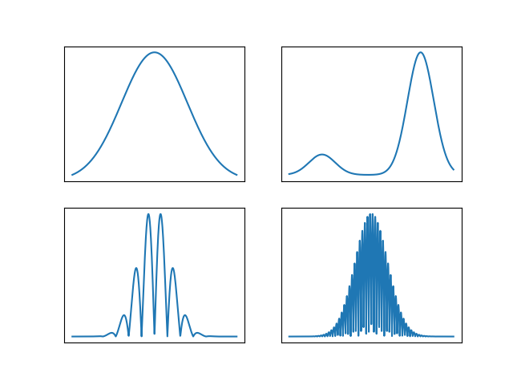
1D results
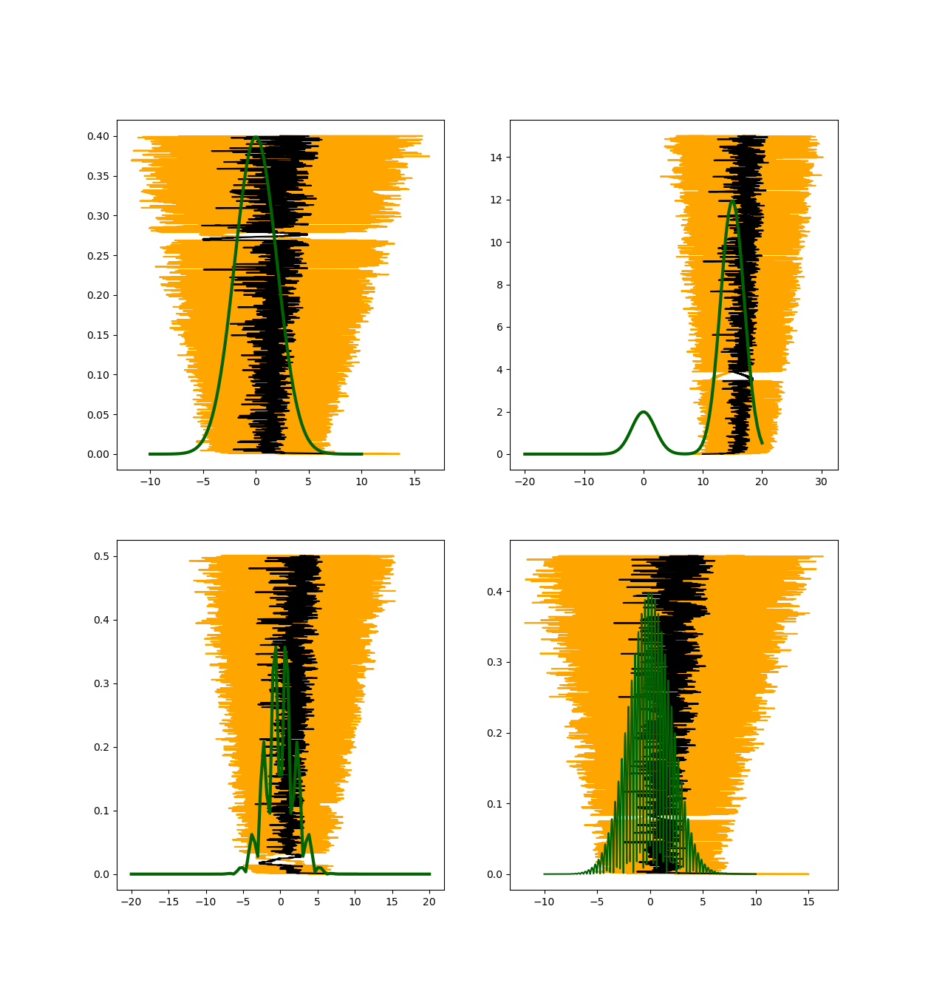
2D benchmarks
 | 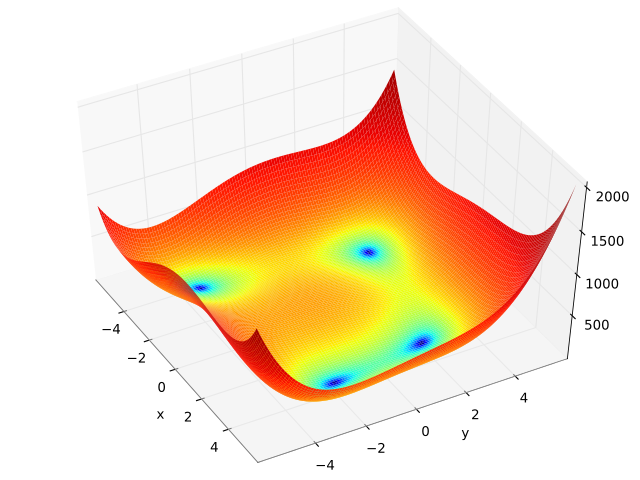 |
| 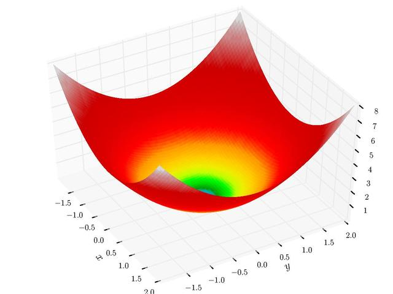 | 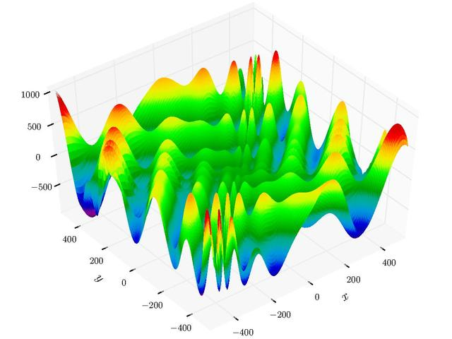 |
Zoom In
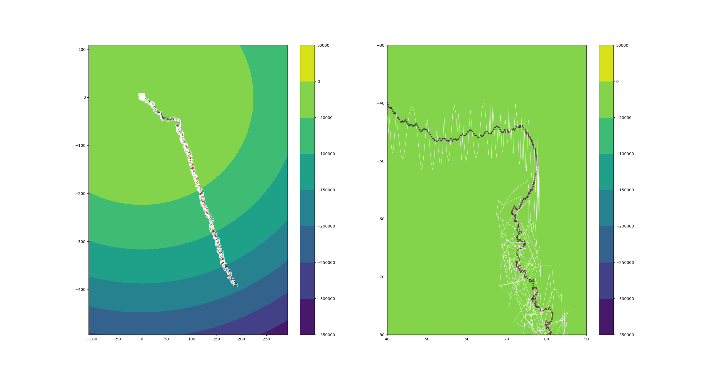
2D results
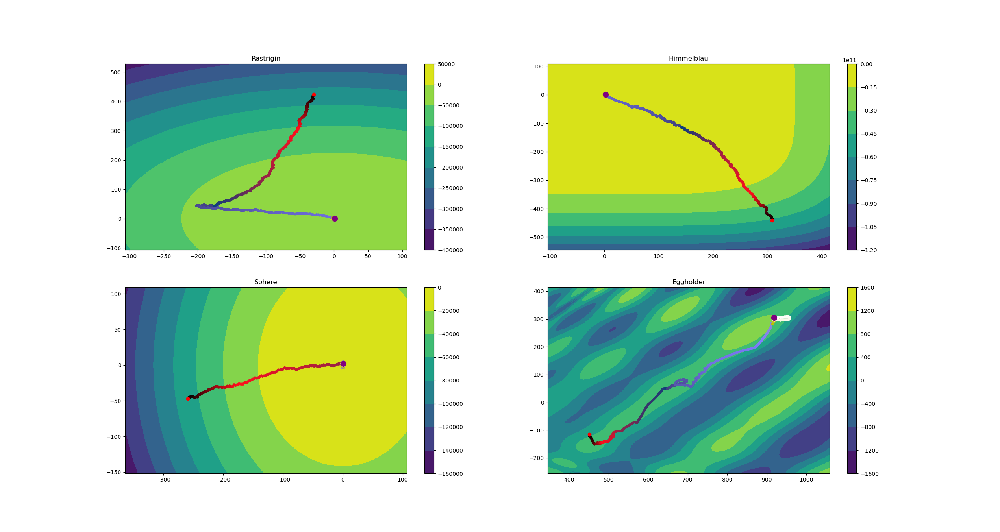
Exploration routes (apply to CTRNN’s)
- (Yoder et al.) Generate Oscilations within CTRNN (size 10)
- Reward inhibition/amplification: \(\Delta\) reward does not change \(\rightarrow\) seek new reward area, return after reward drought
- Meta-Learning: Larger amplitude, slower timescale
- Compression: Reconfigure new network to mimic the input-output of a larger network